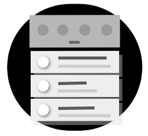
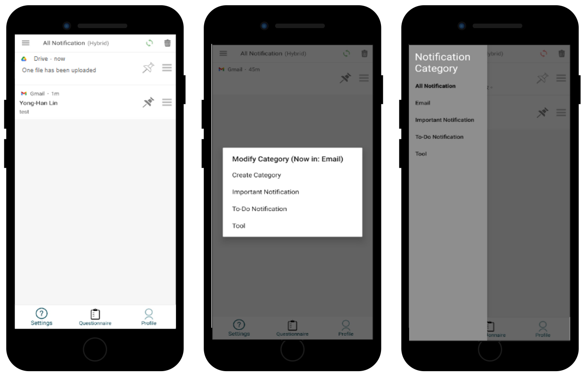

What is NotiManager?
When viewing notifications, do you struggle to prioritize the ones you want to see first?
How often do you face the frustration of not finding notifications you've previously viewed?
Do you sometimes feel stressed by notification overload when opening your notification drawer?
Now, you can solve these problems with NotiManager.
NotiManager is an Android notification manager that enhances your notification reading by automatically sorting your notifications,
placing the ones you may prefer to read at the top, and by automatically categorizing your notifications,
grouping the same types together. Simultaneously, you retain control over NotiManager, meaning you can
manually pin, sort, and categorize any notification according to your preferences.
With both automatic and manual features, NotiManager improves your experience of handling notifications.
How NotiManager works and how to use it?
Pinning
By pinning notifications, users can keep notifications remain visible, unaffected by any actions such as clicking, swiping off, or pressing clear-all-notifications button. The pinned notification can only be removed after deselecting the pin.
Sorting
Notifications are automatically sorted upon arrival, leveraging our machine learning model to predict the preferred order for users. For those who desire more control, NotiManager offers manual adjustments — simply drag and drop notifications to personalize the sequence. NotiManager remembers these customizations, maintaining the positions of manually adjusted notifications.
Categorization
When a notification arrives, it will be automatically assigned to a category based on the app categories established by the Google Play Store and as suggested by prior research. Users have the option to manually add notifications to a category. They can filter notifications they want to handle by clicking into a specific category, allowing for a less burdensome experience compared to viewing all notifications.
Manual + Automated
NotiManager is a hybrid system incorporating both manual and automated features, designed to strike a balance between flexibility and efficiency. Users have the freedom to choose the approach that best suits their preferences.
Why should you consider using NotiManager?
👉🏻 To focus on the current task or activity
👉🏻 To defer notificaiton to convenient time / spare time / post-context / more suitable device
👉🏻 To locate the notification more quickly in the future
👉🏻 To label and filter notification for later processing
👉🏻 To retain information for future reference
👉🏻 To view the full content of the notification without having it deleted
👉🏻 To prevent the notification from being accidentally deleted
👉🏻 To visually enhance a notification's perceived importance
In our mix-methods study, we learned:
🎯 How would users utilize sorting, categorization, and pinning in a notification interface when
these features are available?
🎯 How do users perceive and experience these three features in managing their notifications?
Want to see more about how we conducted this study?
Check out our publications 👀
Highlighted Findings
For pinning:
✨ Pinning served diverse purposes such as deferring notifications, ensuring quick and constant access to information, preventing accidental deletions, and providing visual reminders.
✨ Pinning revealed a potential emerging workflow in notification management — pin to temporarily preserve, bulk remove others, and then assess the pinned notifications.
✨ Compared to snooze, a feature already used in the current notification system for deferring notifications, pinning had comparative advantages, including 1) enabling the taking of quick, simple actions without the need for deliberation and 2) obviating the need for pre-scheduled re-engagement. However, pinning was considered poor for proactive reminder.
✨ Pinning revealed a potential emerging workflow in notification management — pin to temporarily preserve, bulk remove others, and then assess the pinned notifications.
✨ Compared to snooze, a feature already used in the current notification system for deferring notifications, pinning had comparative advantages, including 1) enabling the taking of quick, simple actions without the need for deliberation and 2) obviating the need for pre-scheduled re-engagement. However, pinning was considered poor for proactive reminder.
For sorting:
✨ The automatically sorted sequences did not work as well as expected for our participants. Automatic sorting was expected to be supporting batch operation, adaptive to dynamic contexts, and explainable.
✨ Manual sorting was employed to control visibility of pinned notifications, group notifications for easier future access, and correcting outcomes from the automatic features.
✨ Manual sorting was employed to control visibility of pinned notifications, group notifications for easier future access, and correcting outcomes from the automatic features.
For categorization:
✨ Automatic categorization facilitates notification operation, but needs to extend beyond app-based approach. A topic-based approach was more preferred by participants.
✨ Manual categorization was tedious, and used mainly for correcting the automatic features.
✨ Manual categorization was tedious, and used mainly for correcting the automatic features.
Takeaways
If you are a ...
👩🏻💻 Notification System Designer or Developer:
Our research suggests that future notification systems may incorporate the pinning feature to allow users to include deferral without additional alert or mixture with new notifications, have easy and constant access to information for later use, quickly narrow down notifications worth attention on a clean interface without worrying accidental removal, and add visual salience to help distinguish notifications. Our findings also show recommendations on how to improve future design of automatic sorting and categorization, offering guidelines for the design of more intelligent notification management features. These recommendations include grouping notifications with similar topics, adapating notification order to users' dynamic contexts, and consistently improving sorting and categorization from users' natural interactions with notifications.
Our research suggests that future notification systems may incorporate the pinning feature to allow users to include deferral without additional alert or mixture with new notifications, have easy and constant access to information for later use, quickly narrow down notifications worth attention on a clean interface without worrying accidental removal, and add visual salience to help distinguish notifications. Our findings also show recommendations on how to improve future design of automatic sorting and categorization, offering guidelines for the design of more intelligent notification management features. These recommendations include grouping notifications with similar topics, adapating notification order to users' dynamic contexts, and consistently improving sorting and categorization from users' natural interactions with notifications.
👩🏻🔬 Notification Researcher:
In our research, we provide empirical evidence on the efficacy of pinning, sorting, and categorizing notifications, contributing to the field of notification research. We encourage future studies to explore methods for enhancing automatic features. For instance, researchers could refine automatic notification sorting by considering both topics and classified intentions, utilizing large language models (LLMs) to analyze notification similarities based on topics and classify reading intentions from sensor data. Subsequent investigations could assess the effectiveness of combining topic and intention classification in meeting user needs.
In our research, we provide empirical evidence on the efficacy of pinning, sorting, and categorizing notifications, contributing to the field of notification research. We encourage future studies to explore methods for enhancing automatic features. For instance, researchers could refine automatic notification sorting by considering both topics and classified intentions, utilizing large language models (LLMs) to analyze notification similarities based on topics and classify reading intentions from sensor data. Subsequent investigations could assess the effectiveness of combining topic and intention classification in meeting user needs.
🙋🏻♀️ Notification User:
Our findings provide valuable insights into study participants' perceptions and experiences with each feature in NotiManager, offering a deeper understanding of the reasons and contexts for their usage. Our participants enjoy the three management features, with pinning being a standout favorite. Some participants have continued using NotiManager even after the study. Download our app now to explore and experience it for yourself!
Our findings provide valuable insights into study participants' perceptions and experiences with each feature in NotiManager, offering a deeper understanding of the reasons and contexts for their usage. Our participants enjoy the three management features, with pinning being a standout favorite. Some participants have continued using NotiManager even after the study. Download our app now to explore and experience it for yourself!
Publications
Pinning, Sorting, and Categorizing Notifications: A Mixed-methods Usage and Experience Study of Mobile Notification-management Features
Yong-Han Lin, Li-Ting Su, Uei-Dar Chen, Yi-Chi Lee, Peng-Jui Wang, Yung-Ju Chang (IMWUT - UbiComp/ISWC '24)
PDF ‧ ACM Digital Library ‧ BibTex ‧ Reference
Yong-Han Lin, Li-Ting Su, Uei-Dar Chen, Yi-Chi Lee, Peng-Jui Wang, Yung-Ju Chang (IMWUT - UbiComp/ISWC '24)
PDF ‧ ACM Digital Library ‧ BibTex ‧ Reference
Automatic, Manual, or Hybrid? A Preliminary Investigation of Users’ Perception of Features for Supporting Notification Management
Yong-Han Lin, Li-Ting Su, Uei-Dar Chen, Peng-Jui Wang, Yi-Chi Lee, Yung-Ju Chang (UbiComp/ISWC '23)
PDF ‧ ACM Digital Library ‧ BibTex ‧ Reference
Yong-Han Lin, Li-Ting Su, Uei-Dar Chen, Peng-Jui Wang, Yi-Chi Lee, Yung-Ju Chang (UbiComp/ISWC '23)
PDF ‧ ACM Digital Library ‧ BibTex ‧ Reference
Get NotiManager Now?

Download on Android Smartphone
Research Team
We are a group of graduate and undergraduate researchers from National Yang-Ming Chiao-Tung University's Mobile and Ubiquitous Interaction Lab.
Yong-Han Lin
Li-Ting Su
Uei-Dar Chen
Yi-Chi Lee
Peng-Jui Wang
Yung-Ju Chang
We are working on releasing the app and code, please stay tuned!
If you have any question, contact us at intnoti@gmail.com
If you have any question, contact us at intnoti@gmail.com